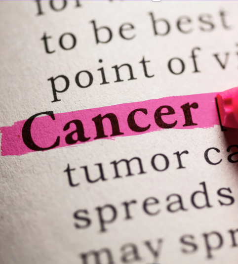

Conscientização
A conscientização é o conceito de Outubro Rosa. Mais do que uma campanha visual, é importante um movimento global para acabar de vez com o câncer de mama. O câncer de mama é uma doença, mas a ausência de cuidados ou o diagnóstico tardio pode matar.
